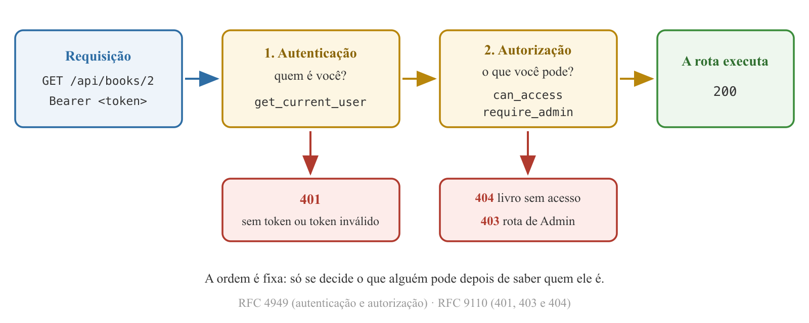
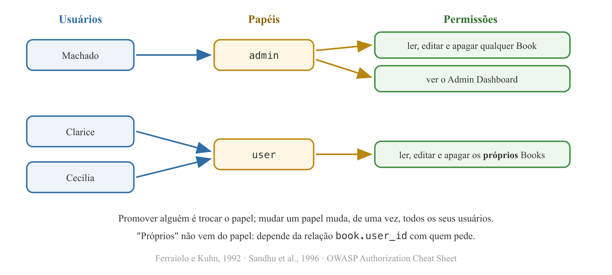
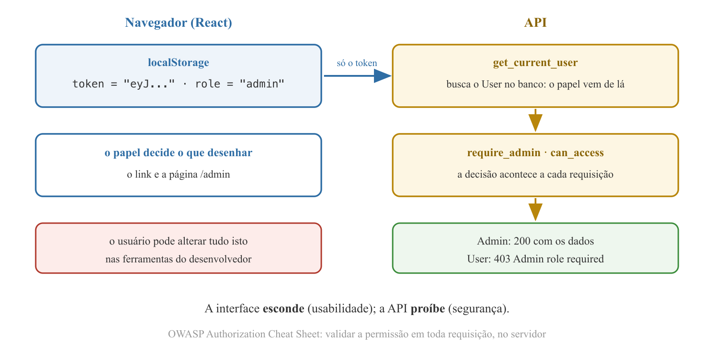
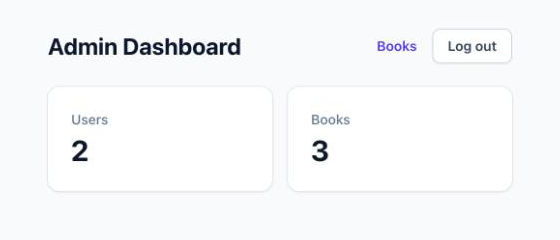
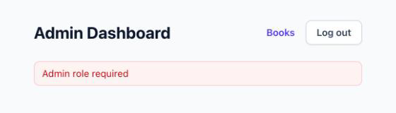

Programação Avançada - Aula 07
https://github.com/anchietajunior/readingtracker
Universidade Unirios
statement = select(models.Book).where(models.Book.user_id == current_user.id)
if book is None or book.user_id != current_user.id: # read_book
if stored_book is None or stored_book.user_id != current_user.id: # update_book
if book is None or book.user_id != current_user.id: # delete_book
users não registra papel nenhum;ENUM do MySQL, com o menor privilégio como padrão;require_admin e escolher entre 401, 403 e 404;/admin no React - e mostrar que quem protege os dados é a API.Autenticação: o processo de verificar uma alegação de que uma entidade do sistema possui determinado valor de atributo.
Autorização: uma aprovação concedida a uma entidade do sistema para acessar um recurso do sistema.
get_current_user respondem a primeira pergunta; a segunda ainda não tem resposta no código.RFC 4949 - Internet Security Glossary, Version 2, IETF, 2007

RFC 4949 · RFC 9110
| sujeito \ objeto | Book 1 (do Machado) | Book 2 (da Clarice) | Admin Dashboard |
|---|---|---|---|
Machado (admin) | ler, editar, apagar | ler, editar, apagar | ver |
Clarice (user) | - | ler, editar, apagar | - |
Com milhares de usuários e milhões de objetos, manter célula por célula é inviável: os modelos de controle de acesso geram a matriz a partir de regras.
LAMPSON, B. - Protection, 1971
No RBAC, permissões são associadas a papéis, e usuários são designados aos papéis apropriados, adquirindo assim as permissões desses papéis.
FERRAIOLO, D.; KUHN, R. - 1992 · SANDHU, R. et al. - Role-Based Access Control Models, 1996

Ferraiolo e Kuhn, 1992 · Sandhu et al., 1996
book.user_id;admin dispensa a relação; o papel user a exige.user: nenhuma regra nova. A linha dele na matriz é gerada pelo papel e pela relação de dono.OWASP - Authorization Cheat Sheet, cheatsheetseries.owasp.org
import enum
class Role(enum.Enum):
ADMIN = "admin"
USER = "user"
enum.Enum - biblioteca padrão do Python (PEP 435, Barry Warsaw, Eli Bendersky e Ethan Furman; Python 3.4): só estes dois valores existem;ADMIN, em maiúsculas por ser constante) e valor ("admin");user.role == Role.ADMIN - nunca com uma string solta, que aceitaria "Admin" ou "adm".PEP 435 - Adding an Enum type to the Python standard library, 2013
role: Mapped[Role] = mapped_column(
Enum(Role, values_callable=lambda roles: [role.value for role in roles]),
server_default=Role.USER.value,
)
Enum(Role, ...) é do SQLAlchemy - o tipo da coluna; o enum.Enum do Python define os valores;values_callable: o banco guarda o valor ('admin'), não o nome do membro ('ADMIN');server_default: o DEFAULT fica no banco - todo INSERT sem papel cria um usuário comum.
`role` enum('admin','user') NOT NULL DEFAULT 'user'
DROP TABLE books; DROP TABLE users; - o model ganhou coluna e o create_all não altera tabela existente. Depois: SHOW CREATE TABLE users;
POST /signup
{"name": "Machado de Assis", "email": "machado@exemplo.com",
"password": "segredo123", "role": "admin"}
SELECT id, email, role FROM users; mostra user;UserCreate declara só name, email e password; o Pydantic ignora o resto: o schema é a lista do que o cliente pode enviar;Documentação oficial do Pydantic - docs.pydantic.dev (Models)
Mac e Windows (dentro do cliente mysql)
UPDATE users SET role = 'admin' WHERE email = 'machado@exemplo.com';
SELECT id, email, role FROM users;
UPDATE users SET role = 'root' ... → o MySQL recusa: Data truncated for column 'role'. Fora da lista do ENUM, nenhum valor entra.Documentação oficial do MySQL - dev.mysql.com (The ENUM Type)
user.Jerome Saltzer e Michael Schroeder reuniram oito princípios em 1975 - ainda hoje a base dos guias de segurança. Tradução livre.
SALTZER, J.; SCHROEDER, M. - The Protection of Information in Computer Systems, Proceedings of the IEEE, 1975
| OWASP API Security Top 10 (2023) | No projeto |
|---|---|
| API1 - Broken Object Level Authorization (BOLA): objeto alheio pelo id | GET /api/books/2 com o token de outro User |
| API3 - Broken Object Property Level Authorization: propriedade que o cliente não deveria controlar | "role": "admin" no corpo do signup |
| API5 - Broken Function Level Authorization (BFLA): função administrativa por usuário comum | GET /api/admin/stats sem ser Admin |
OWASP - API Security Top 10, 2023 - owasp.org/API-Security
401: a requisição não foi aplicada porque não possui credenciais de autenticação válidas para o recurso. 403: o servidor entendeu a requisição, mas se recusa a atendê-la. Um servidor que deseje "esconder" a existência de um recurso proibido pode, em vez disso, responder 404.
| Situação | Resposta | Por quê |
|---|---|---|
| Sem token, ou token inválido | 401 | a API não sabe quem é |
| User pede livro de outro User | 404 | a existência do livro não se confirma |
| User chama rota administrativa | 403 | a rota é pública no Swagger: não há o que esconder |
RFC 9110 - HTTP Semantics, IETF, 2022 (15.5.2 e 15.5.4), tradução livre
@property
def is_admin(self) -> bool:
return self.role == Role.ADMIN
def can_access(self, book: "Book") -> bool:
return self.is_admin or book.user_id == self.id
is_admin: property lida como atributo, calculada a partir do papel;can_access: a matriz em uma linha - o Admin acessa qualquer livro (papel); os demais, os que têm o próprio id (relação). Só devolve True com permissão explícita;"Book" entre aspas: a classe é definida mais abaixo no arquivo (forward reference, PEP 484).PEP 484 - Type Hints, 2014 (Forward references)
statement = select(models.Book)
if not current_user.is_admin:
statement = statement.where(models.Book.user_id == current_user.id)
if name != "":
statement = statement.where(models.Book.name.contains(name))
return session.scalars(statement).all()
if book is None or not current_user.can_access(book):
raise HTTPException(status_code=404, detail="Book not found")
read_book, update_book e delete_book chamam can_access;create_book não muda: o dono vem do token - o papel amplia o que o Admin acessa, não em nome de quem ele escreve.sub (quem é), não o papel: o get_current_user busca o usuário no banco a cada requisição, e o papel vem junto;| Token | Requisição | Resposta |
|---|---|---|
Clarice (user) | GET /api/books | só os livros dela |
Clarice (user) | GET no livro do Machado | 404 |
Machado (admin) | GET /api/books | os livros dos dois |
Machado (admin) | PUT no livro da Clarice | 200 |
def require_admin(current_user: models.User = Depends(get_current_user)) -> models.User:
if not current_user.is_admin:
raise HTTPException(status_code=403, detail="Admin role required")
return current_user
get_current_user responde 401 antes; com token, a decisão é sobre o papel;Documentação oficial do FastAPI - fastapi.tiangolo.com (Sub-dependencies)
router = APIRouter(prefix="/api/admin", tags=["admin"],
dependencies=[Depends(require_admin)])
@router.get("/stats", response_model=AdminStats)
def read_stats(session: Session = Depends(get_session)):
users_count = session.scalar(select(func.count(models.User.id)))
books_count = session.scalar(select(func.count(models.Book.id)))
return AdminStats(users_count=users_count, books_count=books_count)
dependencies no router: toda rota do arquivo exige o papel, inclusive as futuras - a mediação completa vira estrutura;func.count gera o COUNT(...); session.scalar devolve o número. O banco conta; nenhuma linha viaja para o Python;def: a sessão do SQLAlchemy é bloqueante - a rota roda na threadpool.Documentação oficial do FastAPI - Dependencies in path operation decorators · SQLAlchemy - func.count
class TokenResponse(BaseModel):
access_token: str
token_type: str = "bearer"
role: Role
class AdminStats(BaseModel):
users_count: int
books_count: int
| Chamada | Resposta |
|---|---|
POST /login (Machado) | "role": "admin" |
/api/admin/stats sem token | 401 |
/api/admin/stats Clarice | 403 |
/api/admin/stats Machado | 200 users_count, books_count |
return TokenResponse(access_token=create_access_token(user.id), role=user.role)
Na resposta JSON, o Pydantic publica o valor do enum.

OWASP - Authorization Cheat Sheet
/admin;exp;
export async function login(email, password) {
const data = await request("/login", { method: "POST", body: { email, password } });
return { token: data.access_token, role: data.role };
}
const { token, role } = await login(email, password);
onLogin(token, role);
access_token);App, o papel segue o caminho do token: localStorage no login, removido no logout.
const [role, setRole] = useState(localStorage.getItem("role"));
if (token) {
const isAdmin = role === "admin";
if (window.location.pathname === "/admin" && isAdmin) {
return <AdminDashboardPage onLogout={handleLogout} />;
}
return <BooksPage isAdmin={isAdmin} onLogout={handleLogout} />;
}
window.location.pathname: o caminho do endereço atual. O Vite devolve o mesmo index.html para qualquer caminho - quem interpreta é o App;/admin recebe a página de livros.
export default function TextLink({ href, children }) {
return (
<a href={href} className="rounded text-sm font-semibold text-indigo-600 hover:text-indigo-500 focus-visible:outline-2 focus-visible:outline-offset-2 focus-visible:outline-indigo-600">
{children}
</a>
);
}
<a>: é o que o leitor de tela anuncia como link e o que "abrir em nova aba" respeita; o foco visível segue o Button;<a> recarrega a página: o App recomeça e lê token e papel do localStorage. Bibliotecas como o React Router trocam de página sem recarregar - com um endereço novo, o link comum basta;StatCard: um Card com rótulo e número - composição, como o BookItem.
useEffect(() => {
async function loadStats() {
try {
setStats(await getStats());
} catch (err) {
setError(err.message);
}
}
loadStats();
}, []);
loadStats mora dentro do efeito porque só ele a usa - a forma recomendada para buscar dados. No BooksPage, o loadBooks fica fora porque os handlers também o chamam;stats começa null: {stats && (...)} só desenha os cards quando os números chegam.Documentação oficial do React - react.dev (Synchronizing with Effects)

BooksPage, o Admin vê o título All books e o link Admin Dashboard: {isAdmin && <TextLink href="/admin">...};false e o React não desenha nada.
role para admin no Local Storage e recarrega /admin: a página abre;/api/admin/stats responde 403 - a página mostra Admin role required e nenhum número;App guarda os dois e escolhe a página pelo endereço;TextLink navega, StatCard exibe uma quantidade;AdminStats o campo finished_books_count: a quantidade de Books concluídos - Reading Progress em 100%;GET /api/admin/stats;StatCard no Admin Dashboard, com o rótulo Finished books.progress é uma property do Python, não uma coluna: o banco não a conhece. A consulta precisa de uma condição que o SQL entenda.ENUM do MySQL com DEFAULT 'user'; a API não oferece rota para concedê-lo, e o schema de entrada ignora o que não declara;User.can_access e toda rota de um livro a consulta - padrão à prova de falha, mediação completa e menor privilégio (Saltzer e Schroeder, 1975);require_admin, declarado no router, protege todas as rotas administrativas de uma vez;/admin aparece só para o Admin - mas a tela é conveniência: quem protege os dados é a API, que consulta o papel no banco a cada requisição.Enum, func.count); do FastAPI - fastapi.tiangolo.com (dependências); do Pydantic - docs.pydantic.dev; do MySQL - dev.mysql.com (The ENUM Type); do React - react.dev (Synchronizing with Effects, Conditional Rendering).